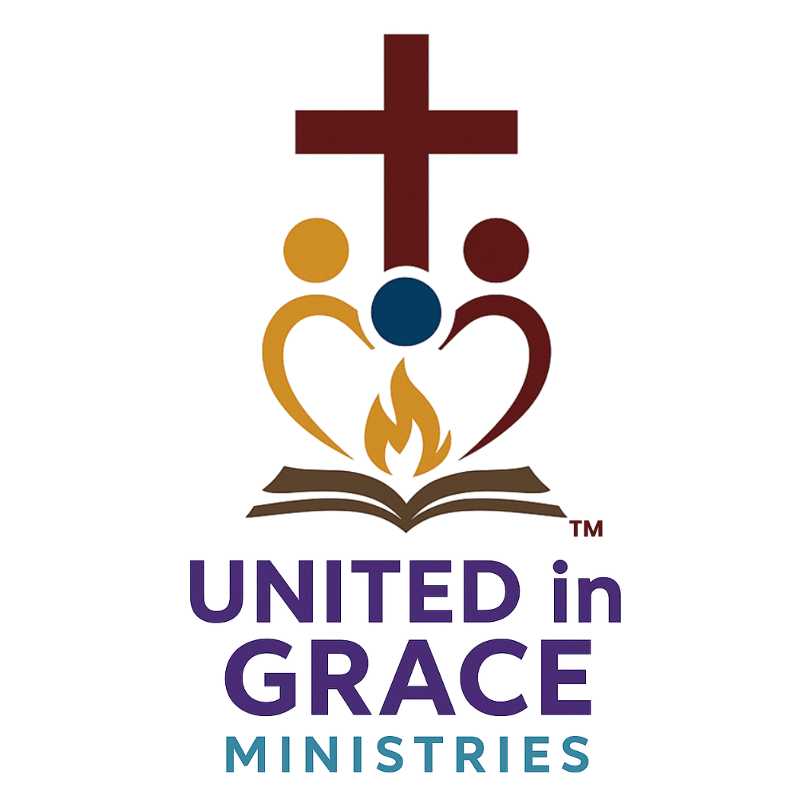
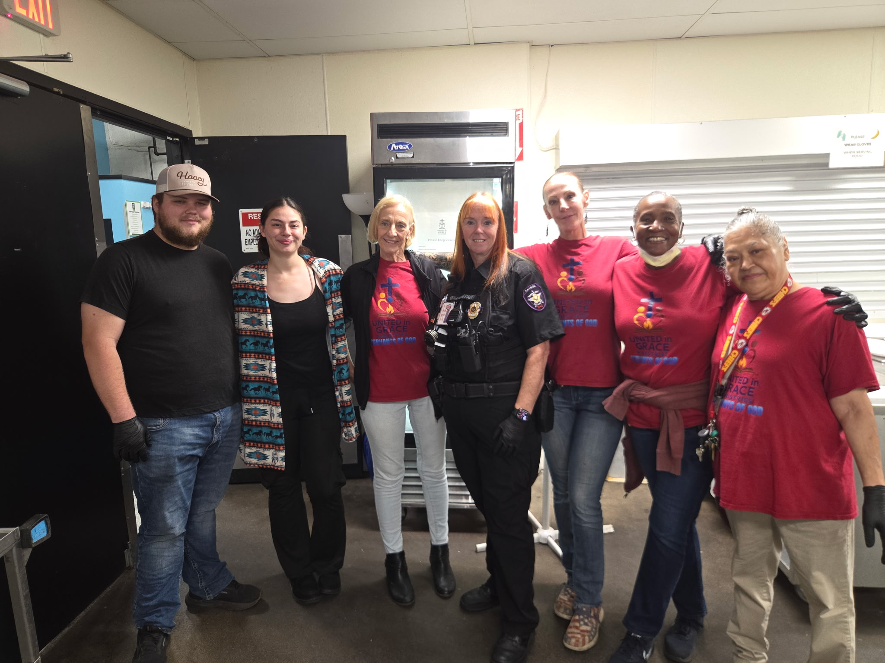

Serving with Grace. Sharing Hope. Living the Gospel.

United In Grace Ministries is a Christ-centered outreach serving our neighbors experiencing homelessness through hot breakfasts, fresh coffee, prayer, fellowship, and the hope found in Jesus Christ. Every Saturday, we strive to remind every guest that they are loved, valued, and never forgotten.
There are many ways you can become part of what God is doing through United In Grace Ministries.
United In Grace Ministries exists to share the love of Jesus Christ by serving our neighbors experiencing homelessness with compassion, dignity, practical support, and the hope of the Gospel. Every Saturday, we believe that a warm meal, a sincere conversation, and a heartfelt prayer can remind someone they are loved by God and never forgotten.
Everything we do is centered on sharing the love and hope found in Jesus Christ.
Every guest is treated with dignity, kindness, respect, and genuine compassion.
We believe lasting relationships begin with listening, encouragement, and prayer.
Our mission goes beyond meeting physical needs—we strive to share the life-changing hope of the Gospel.
Every Saturday tells another story of God's faithfulness. The statistics below are updated automatically from our weekly outreach records.
Total Guests Served
Saturdays Served
Average Guests Each Week
Highest Attendance
Every number represents a person. These are a few of the words that continue to encourage our volunteers each Saturday.
"Thank you for remembering me."
"Can you pray for me today?"
"This breakfast means everything."
"God bless every one of you."
"I'll see you next Saturday."
"Thank you for loving our community."
Every Saturday morning, our volunteers come together to serve our neighbors experiencing homelessness with compassion, dignity, and the love of Jesus Christ. Through warm meals, prayer, fellowship, and practical support, we strive to remind every guest they are seen, valued, and loved by God.
Freshly prepared breakfasts served with kindness, hospitality, and a welcoming smile.
A hot cup of coffee often becomes the beginning of meaningful conversations and lasting relationships.
We gladly pray with anyone seeking hope, comfort, or someone to simply listen.
Hygiene items, bottled water, and other essential supplies are available whenever resources allow.
We believe ministry begins with genuine relationships, respect, and taking time to know each person.
Above all, we seek to share the hope, peace, and love found in Jesus Christ.
Whether you'd like to volunteer, donate, shop our Amazon Wishlist, or stay connected online, we'd love to have you partner with United In Grace Ministries.